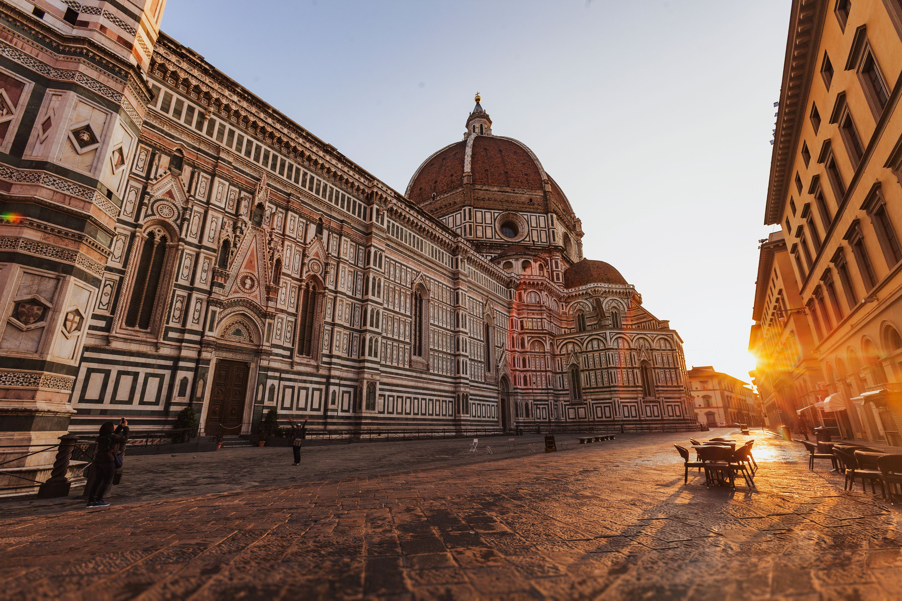

Italy and France stand prominently as the two countries with a remarkable wealth of famous architectures, drawing design students and enthusiasts alike from around the globe. Italy, the cradle of the Renaissance, boasts an architectural portfolio that spans centuries, featuring masterpieces like the Colosseum, the Leaning Tower of Pisa, and the cathedrals of Florence and Milan, embodying the pinnacle of artistic and engineering ingenuity. Meanwhile, France offers an equally impressive architectural tableau, from the gothic grandeur of Notre-Dame de Paris to the modernist marvel of the Louvre Pyramid, encapsulating a history of bold innovation and aesthetic refinement. These countries not only preserve the legacies of great architects but also continue to inspire contemporary design with their rich, historical narratives and enduring beauty.
Here, you can take a glance of some of the most famous landmarks.
Florence
Florence, the jewel of the Italian Renaissance, is a city that stands as a testament to the power of human creativity and intellect. Nestled in the heart of Tuscany, it is a place where art and architecture converge in a dazzling display of beauty. The city is home to some of the most iconic landmarks in the world, including the majestic Duomo, with its breathtaking dome engineered by Filippo Brunelleschi, and the Uffizi Gallery, housing an unparalleled collection of Italian Renaissance art.
Paris
Paris is celebrated for its breathtaking architecture, a harmonious blend of historical grandeur and avant-garde design that shapes its skyline. From the gothic splendor of Notre-Dame Cathedral to the intricate ironwork of the Eiffel Tower, each structure tells a story of the city's rich cultural and artistic heritage. The wide boulevards, lined with Haussmannian buildings, exude elegance, showcasing Paris's revolutionary approach to urban planning in the 19th century. Meanwhile, modernist icons like the Centre Pompidou and the glass pyramid of the Louvre add a contemporary edge to the city's architectural tapestry. This blend of old and new, traditional and innovative, makes Paris a living museum of architectural masterpieces, drawing admirers from around the globe.